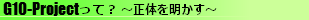

G10-Projectは、リーダー：雨宮松雪（あまみやまつゆき）が中心とする１０人で活動中のゲーム制作団体でした。
当サイトはそんなG10の制作物を淡々と上げていくサイトでした。
サイト自体は松雪が管理しておりますが、ゲームは他のメンバーでつくることもあります。
メンバーは年に４回見直しを行っていました。解散当時のメンバーは以下の通りです。
２０１０年度１月期G10-Project（2010/12/19〜2011/3/31）
・(01...10)メインメンバー
01 雨宮松雪(現: rmn.)
02 櫻庭士狼
03 雨宮慈雨
04 都環青樫(現: Aokashi)
05 ロゼルス
06 ヴァルテイン
07 蒼夢憐霞
08 virus.exe
09 まっき
10 瑞梨紗奈
・(E1)特別顧問
E1 ホワック
・(S1...S4)ECA特別枠
S1 たつル
S2 しょぼーん（m/雨宮雪那）
S3 モララー
S4 k.m.(真の黒幕）
|